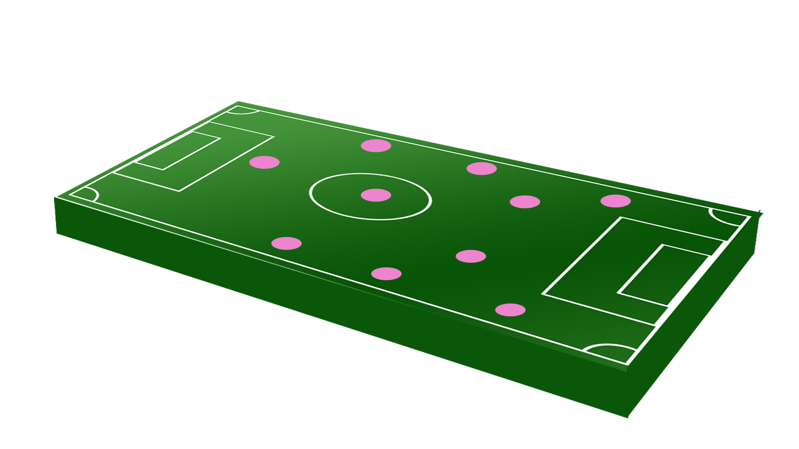

Does 2-4-3-1 work?
First of all, the way I imagine 2-4-3-1 is shown below:-

In such a formation, as we can see, the centre backs are sacrificed and pushed forward to defensive midfield. The midfield in this case pushes back upon attack from opposition. The two midfielders in the two wings push forwards to occupy the position of the forward wingers while the two second strikers stay in position and become midfield. While attacking, the two defenders may mush forward along with the two wingers and the stricker such that the formation changes to a 4-3-3.
Now, let us indivisually look at the advantages and the disadvantages of this formation.
First of all, the biggest disadvantage of this formation is the lack of central defenders which is a risk.
There might be negative consequences if the team does not fall back fast enough. For this, the wingers need to be
faster than average while the stricker and the central block needs to have a good sense of positioning. The midfielders,
especially the last layer of midfield needs to be physically strong and should be capable of assuming the role of a cetral defender
whenever necessary. There can be lack of support for the goalkeeper too.
Coming to the advantage, this formation supports high speed passing. Every player has atleast 2 options avialable at any given time
where an accuracy of above 90% is acheivable. Such an arrangement is good for build-up play but the lack of support for the goalkeeper
makes passing in the defense risky. The defenders at the two ends should not pass to eachother or the goalkeeper unless in an emergency like
an attack in or near the penalty box, when the two defenders will have to come closer. and be inside the box blocking any shots from the opposition.
Rather, they should try to pass to the wingers near them and the defensive midfielders who can move the ball between both the flanks. The forward block is however
allowed to play long passes as long the passes do not cross the first line of midfield.
It has to be noted though that such a formation is suitable for possession based game and the ball should be
in control of the midfielders and should finish with them having the most touches. If the ball is lost in the central
midfield, it would leave the defense at high risk and two defenders would have push towards the center to cover the attacking player.
However, this would leave the two wings free of defense, which can easily be exploited with a slide in to one of the wingers who can go past
the goalkeeper or score himself. A solution to this problem would be to have the midfield wingers mark the opposing team's wingers in case of
such a scenario. There is also opportunity of creativity in the midfield.
| Aspect | Description | Score |
|---|---|---|
| Defense | This formation lacks in defense. Although the compact midfield makes up for it, it does not eliminate the risks. | 3/5 |
| Midfield | There is ample scope for improvisation in the midfield and is the centre of the game. | 4/5 |
| Attack | The attacking line-up can remain free of pressure as long as the ball does not cross the second line of midfield. There is also plenty of support for scoring - from the first line of midfield and the wingers. | 4/5 |
| Versatility | It is a very versatile formation. However, it can be used efficiently only if the players for every position is chosen wisely and logically. | 4/5 |
| Overall | 7.5/10 |